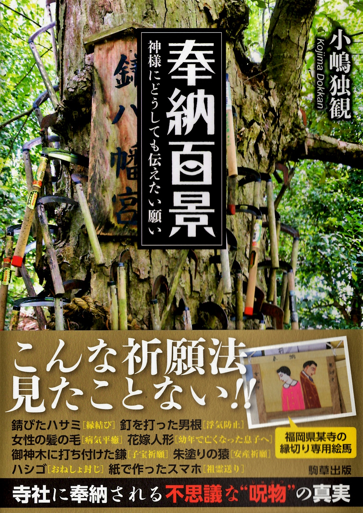
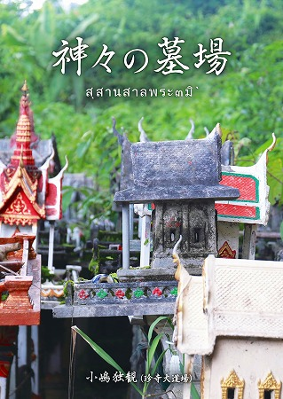

|
|
funky
buddha
experience
since1997
ｂｙ 小嶋独観
Dokkan Kojima
＃448 吉祥寺/香川県
何ともユニークな釈迦入滅の姿。
＃446 於安御前/徳島県
安産の神様の伝説に隠された意味とは？
＃445 幡龍寺/岩手県
美しすぎる穴開き石奉納とワンちゃん供養の寺
＃444 陸奥国総社宮と荒脛巾神社/宮城県
濃密な信仰の現場。その裏に何があったのか？
＃442 観音寺のコンクリ仏/香川県
四国八十八カ所霊場にあったイイ味のコンクリ仏！
これ以前のバックナンバーをご覧になりたい方,全てをお見せいたしましょう総目次
あなたの街にも珍寺が！都道府県別一覧はこちらからGO！
北海道 東北 北関東 南関東 甲信越北陸
東海 近畿 中国 四国 九州
海外編
奉納百景
神様にどうしても伝えたい願い
駒草出版
小嶋独観 著

出版社サイトはこちら
奉納百景特設サイトはこちら
※当サイト上の画像は全て私、小嶋独観が撮影したものです。商用私用共に無断で使用することはお断りします。
画像、文章共に使用される場合は、必ず当方に御連絡ください。
あと、ネタの大半をこのサイトからダマで引っ張ってきたようなトンビ油揚げ方式の記事とか写真集とかテレビ番組とかバイラルメディアとかマジで勘弁してください（物凄く苦労してお寺とか探してるんでその辺斟酌してください）！
お仕事のご依頼、ご意見、ご感想等々はこちらにて承っております。
tyukkonoe@yahoo.co.jp
SNSはこちら↓で

【著書】こちらもよろしく！



珍寺的リンク集
珍寺小ネタ集珍寺外伝